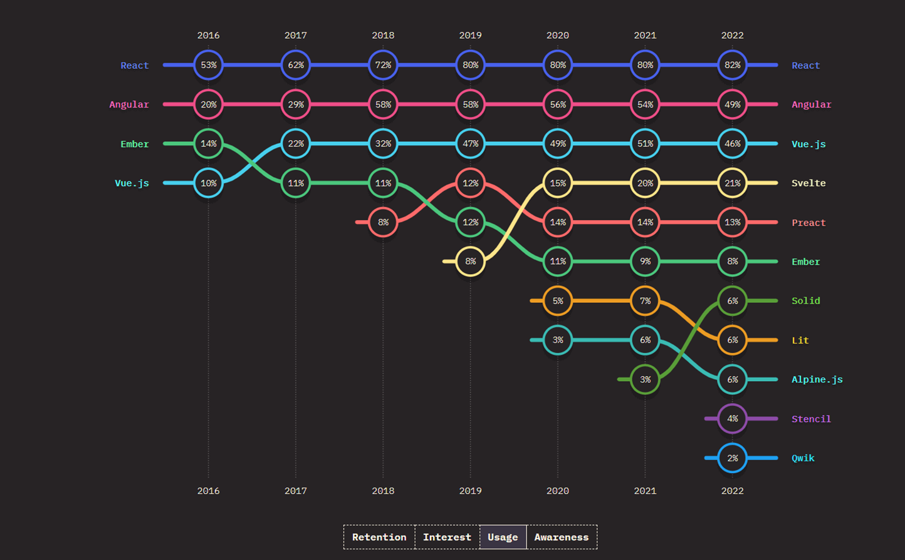

Лучшие JavaScript фреймворки
В 2022 году был выполнен опрос разработчиков ПО, которые выбрали JavaScript, как самый частоиспользуемый
язык. Первое место не уступает другим языкам программирования в течение 10 последних лет и это выбор
более 65% людей. Главная причина популярности – универсальность, ведь JS можно применять для
интерфейсной, внутренней разработки и тестирования софта. Найти лучший JS фреймворк на 2024 непросто,
ведь все они с конкретными особенностями использования, плюсами и минусами. Выбор очень большой и важно
ориентироваться на точный проект, его цели. В статье разберем лучшие варианты на 2024 год в виде списка
лучших фреймворков JavaScript для интерфейса, бэкенда и тестирования.
5 лучших JavaScript-фреймворков для фронтенд-разработки
20 лет JavaScript активно применяют для создания интерфейсов. Среди популярных вариантов следует
отметить React, AngularJS и Vue.js. Они постоянно соревнуются между собой в первенстве, но остаются в
ТОПе и будут занимать эти места в 2024, как лучшие фреймворки JS.

Лучшие фреймворки JavaScript для фронтенд-разработки.
НАВЕРХ